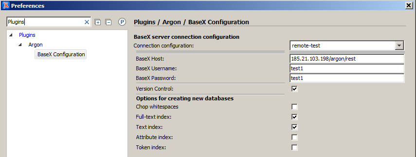

What is Argon Author?
Argon Author is an Oxygen XML Editor (v17) plugin that provides access to the BaseX XML database (v8.5).
For testing you can use the free online playground on demo.argon-author.com where you will be provided with a hosted test database and 3 pre-set users and our DITA demo project.
Installation
With Oxygen, you can install plugins directly from web locations.- call Help | Install new add-ons... from the Oxygen menu
- then choose Browse for remote file in the drop-down folder button next to the field Show add-ons from
- In the next dialog type http://www.argon-author.com/files/extension.xml in the File URL field.
Configuration
Just enter your REST (HTTP) credentials in the configuration settings dialog and choose if you want to use the versioning feature.

Features
Database access
You can browse the database structure of your BaseX server using the view Argon DB Connection.
Creation of new databases, directories, and files can be performed via context menu of the tree.
File Locking (Check In, Check Out)
Double clicking on a file will open it read-only in the editor. Use Check Out in the context menu of the tree to open it editable. Files opened already as read-only can be made writable in the context menu of the editor window.
Drag/Drop/Export
You can drop files and whole directories from your file browser into the database tree. Use the Export Files entry in the context menu of the tree to copy files from the database into the file system. Move files or directories in a database or press Ctrl while dragging and copy them to any location in the tree or drop them on the editor area to open.
Custom Protocol
Files edited in Oxygen can be stored into the database using the button Save As with Argon Protocol in the file toolbar or the menu entry File | Save to URL, specifying argon: as protocol, followed by the path in the database structure (new directories will be created automatically).
User with admin rights are able to access BaseX special folders via argonquery: for the RestXQ folder, argonrepo: for the Repo folder.
Storing text snippets
In the editor's context menu you can choose Store selected Snippet to save selections directly to a database resource or a file on disk.
Version control
If you have checked the box Version Control in the preferences of the plugin, XML and XQuery files will be put under version control. Each time you save a file, a copy is stored in a hidden database as a new revision.
You can mark special progress in the file by setting it to a new version via the Increase File Version button in the toolbar.
You can open the version history via Window\Show View\Argon Version History and compare previous revisions with the current one or other older ones. If you would like to go back to a previous revision of the file use the Reset to button in the Argon Version History view.
Sending queries to the server
Use the Run BaseX Query in the toolbar to send queries to the BaseX server to perform transformation on files stored in your databases. The response to your query will be shown in a new editor window. For queries requiring external variables you will be prompted with a dialog to provide them.
Queries that are stored on the BaseX server will be checked against the syntax known to the server when you are editing them in Oxygen.
Replying to comments in Oxygen's Author mode
When you are using the Author mode in Oxygen, you can reply to comments in the text. Your reply will be formatted into the comment in a way that is easily recognisable for your co-workers.
Publish DITA directly out of databases
If you want to use DITA transformation scenarios with files in BaseX databases, you have to make some changes in the scenario settings. Click the toolbar button Configure Transformation Scenario(s) and edit the scenario you want to use. In the Parameters tab set fix.external.refs.com.oxygenxml to true. In the Advanced tab add -Djava.protocol.handler.pkgs=de.axxepta.oxygen.customprotocol.ArgonProtocolHandler to the JVM Arguments field.